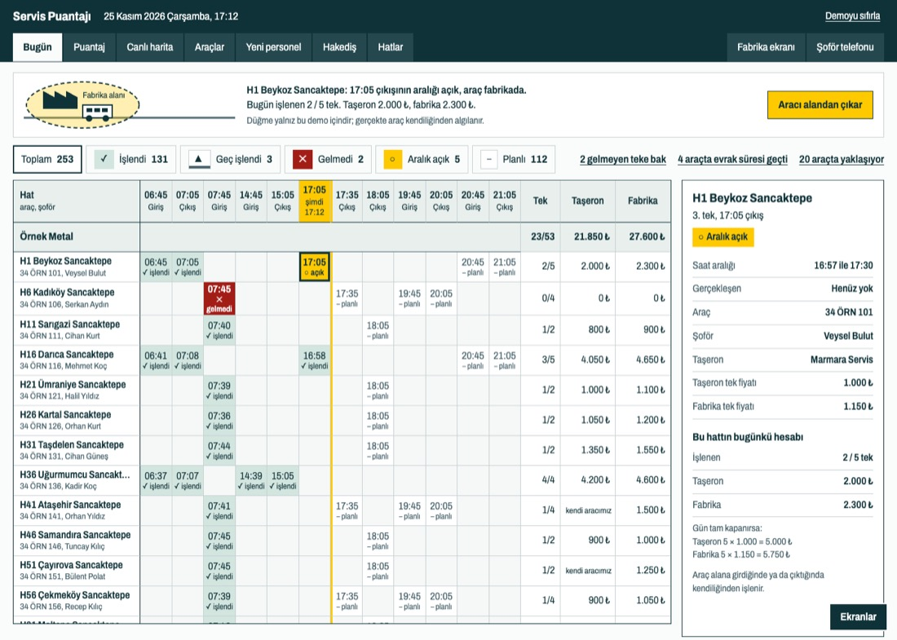

Seçenek 1Çizelge
Excel düzenine en yakın seçenek. Günün bütün tekleri tek tabloda; araç alana girince ilgili hücre kendiliğinden dolar.
Size uyar: Excel alışkanlığını sürdürmek ve bütün hatları bir arada görmek isterseniz.
Seçenek 1'i aç